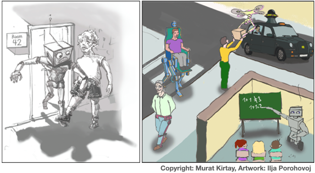

Robot trust in symbiotic societies (RTSS)

Together with Anna Lena Lange, Erhan Oztop, Minoru Asada, Verena Hafner, and Marie Postma, we regularly organize the Robot Trust in Symbiotic Societies (RTSS) workshop series at leading international robotics conferences. Information about past and upcoming RTSS workshops can be found through the links below.
Apart from RTSS workshops, we also organized the following workshops: